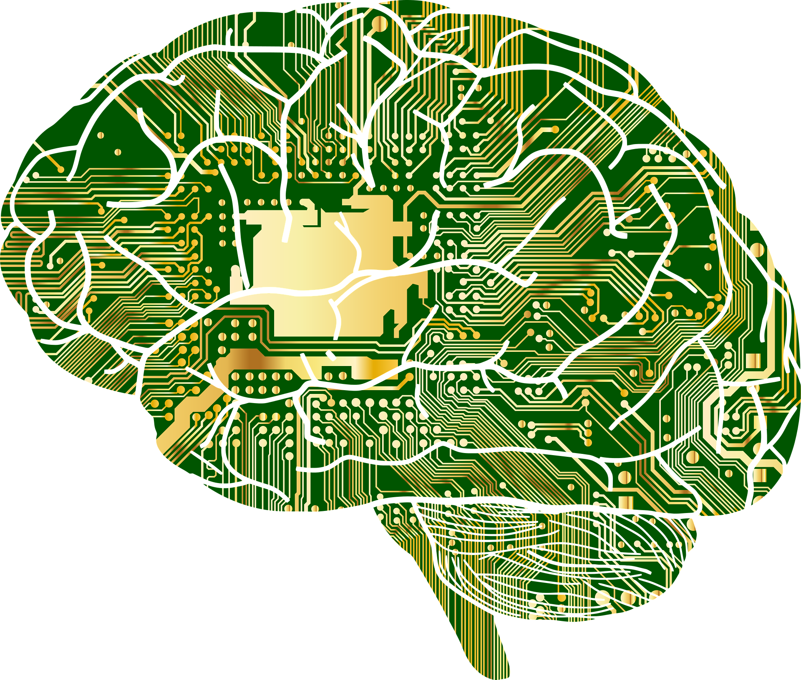

Maskinlæring og ansvar
Anvendelse av maskinlæring
Vi mener at utviklingen av maskinlæring har en tilknytning til samfunnsverdier, og de verdiene som blir verdsatt i dagens samfunn kommer fram i den teknologien som forskes på og produseres.
Svært populære datingsplattformen Tinder tar i bruk maskinlæring for å tilpasse “matches” til det brukeren er interessert i (Tinder, 2022). På grunn av dette fungerer dating som et spill, og det har blitt dannet en “Tinderkultur” som følge av teknologien. Dette er et eksempel på hvordan maskinlæring har endret samfunnets verdier. I motsetning til nå krevde dating mer innsats, og man måtte fysisk ta initiativ i å møte potensielle partnere. Når man legger inn mer innsats, tid og muligens penger når det gjelder dating, er det ikke ønskelig at det ikke blir noe videre med sin potensielle partner.
Det er enklere å få en emosjonell tilknytning til den man dater når man har satt av tid og energi til individet. Dette er ikke tilfelle når det gjelder dating på Tinder. Man trenger ikke å ta initiativ i å møte sin “match”, og kan fortsette å date andre hvis man ikke er fornøyd med matchen. Dette sier noe om endringer i verdier når det kommer til dating. Man ønsker øyeblikkelig tilfredsstillelse uten å ofre mye av sin egen tid og energi, som fører til at man ikke får en emosjonell tilknytning til den man dater. Videre kan dette føre til at mennesker ikke verdsetter individet lenger, når det er hundrevis av andre å velge mellom. Det som er bekymringsfullt med denne utviklingen er at man ikke lenger gidder å ta seg tiden til å bli kjent med individet, fordi man ønsker øyeblikkelig tilfredsstillelse. Dette er bakgrunnen for vår bekymring rundt utviklingen av maskinlæring.
Bildet er tatt av Gordon Johnson fra Pixabay
Innovatørers ansvar for samfunnet
Alle oppfinnelser startet som en løsning på et problem. Det er ofte slik at de første modellene er fylt av feil, og har mye rom for forbedring, så kommer spørsmålet: Hvor mye ansvar har innovatører for samfunnet? Innovatører må tenke på konsekvenser av oppfinnelsene sine, de må forutse og vurdere om oppfinnelsen er laget på en etisk forsvarlig måte. Etisk forsvarlig går inn på at produsenten har tenkt over hvilke konsekvenser produktet deres vil ha på klima, miljø, økosystemer og generelt samfunnet.
Det bør være laget slik at det er best for flest mulig, og ikke det motsatte. Oppfinnelsene går også gjennom en evolusjon, hvor forbrukere gir feedback til produsenten. Dette fører til bedre produkter som er tryggere for forbrukeren. Det er nesten forventet at innovatøren(e) forbedrer innovasjonen ved hjelp av feedback. Et eksempel på dette er når det verdenskjente teknologiselskapet Apple lanserte iPhone 6 som hadde en tydelig feil. Telefonen var laget med en aluminumvariant som ikke var forsterket, som førte til at mobilen mistet sin form og ble bøyd. Dette ordnet Apple senere i tid ved lanseringen av iPhone 7. Dette gjør ulykker til noe som ikke kan unngås, og det er nødvendig for at oppfinnelsen skal bli bedre.
Kilder:
Tinder. (2022, 11. Juli). Powering Tinder® — The Method Behind Our Matching. https://www.tinderpressroom.com/powering-tinder-r-the-method-behind-our-matching